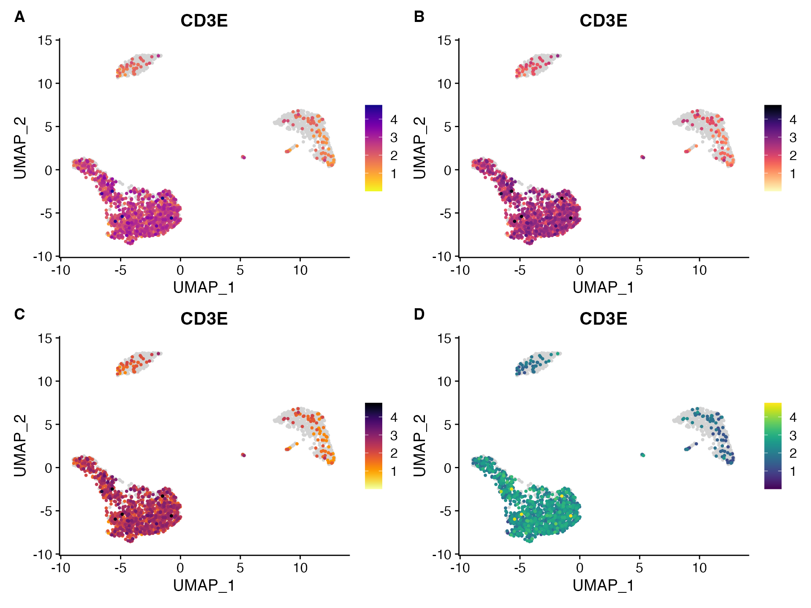
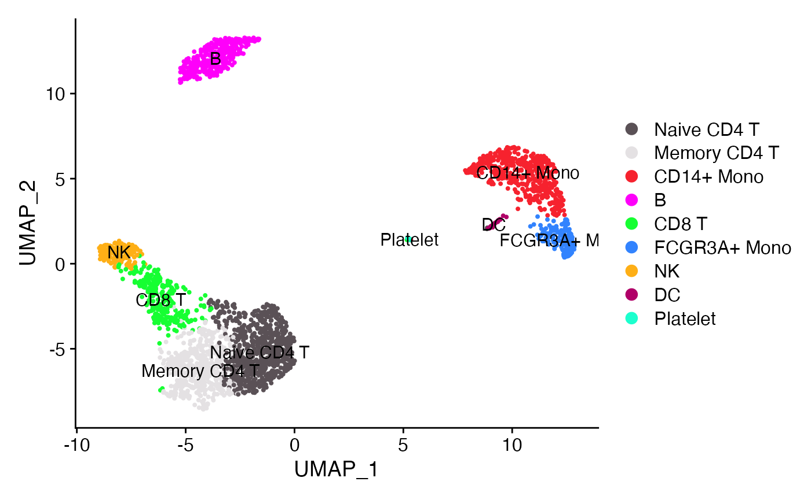

Customized Color Palettes & Themes
Compiled: January 10, 2022
Source:vignettes/Color_Palettes.Rmd
Color_Palettes.RmdChoosing Color Palettes and Themes
While the default Seurat and ggplot2 plots work well they can often be enhanced by customizing color palettes and theming options used. To simplify/streamline this process for end users scCustomize contains a number of shortcut or helper functions for quick access to color palettes and themes that are frequently used.
# Load Packages
library(tidyverse)
library(patchwork)
library(scCustomize)
pbmc <- pbmc3k.SeuratData::pbmc3k.finalContinuous Palettes
scCustomize has a number of quick helpers for access to palettes from viridis package. For more information on viridis palettes and what they are see Intro to Viridis package vignette.
- viridis_plasma_dark_high
- viridis_plasma_light_high
- viridis_magma_dark_high
- viridis_magma_light_high
- viridis_inferno_dark_high
- viridis_inferno_light_high
- viridis_dark_high
- viridis_light_high

These palettes provided better contrast for continuous palettes. In scCustomize the default is viridis_plasma_dark_high
Large Discrete Palettes
DiscretePalette_scCustomize()
The function DiscretePalette_scCustomize is function inspired and modified from Seurat::DiscretePalette(). Under the hood most of the palettes are called using paletteer package to call palettes without adding package dependencies. The following palettes can be specified:
- alphabet (24)
- alphabet2 (24)
- glasbey (32)
- polychrome (36)
- stepped (24)
- ditto_seq (40)
- varibow (Dynamic)
Palettes can either be saved to global environment as variable or called directly within other functions:
# Save as variable to global environment
polychrome_pal <- DiscretePalette_scCustomize(num_colors = 36, palette = "polychrome")
# Call within another function
DimPlot(object = obj_name, cols = DiscretePalette_scCustomize(num_colors = 26, palette = "polychrome"))The “polychrome” palette is the new default for plots with <36 levels and “varibow” when more than 36 levels
DimPlot_scCustom(seurat_object = pbmc)
Visualize Palettes
To visualize these or any other palettes you can use the PalettePlot() function.
PalettePlot(palette = DiscretePalette_scCustomize(num_colors = 26, palette = "alphabet"))
PalettePlot(palette = c("color1", "color2", ...)


Dynamic Palettes
Among the discrete palettes provide the “varibow” palette is actually a dynamic palette whose colors will adjust across the rainbow according to num_colors provided: 


Shuffle Palettes
Sometimes it can be helpful to use different order for the discrete palettes depending on the end plot generated (This can be especially true with “varibow” sometimes). DiscretePalette_scCustomize has optional parameter that will randomly shuffle the returned palette (see shuffle_pal and seed parameter to allow for reproducible shuffling.)
PalettePlot(palette = DiscretePalette_scCustomize(num_colors = 30, palette = "varibow")) + ggtitle("varibow (normal)")
PalettePlot(palette = DiscretePalette_scCustomize(num_colors = 30, palette = "varibow"), shuffle_pal = TRUE) +
ggtitle("varibow (shuffled)")
Small Discrete Palettes
Finally scCustomize contains shortcuts for some shorter discrete palettes that can be useful for plotting groups, treatments, genotypes, etc. 


Plotting Themes & Helpers
ggplot2 themeing works absolutely great but can also be simplified by wrapping commonly used post-plot themes into less verbose functions.
scCustomize contains a few customized themes and ggplot2 helpers that simplify post plot themeing/alterations.
NOTE: These functions can be used with any ggplot2 plot and are not limited to modifying scCustomize plots.
-
UnRotate_X()Undo x-axis label rotation -
Move_Legend()Select new location to move legend -
Blank_Theme()Removes all axis labels and axes from plot -
theme_ggprism_mod()Modified version ofggprism::theme_prism()
Suggestions/Enhancements?
If you have any ideas for additional color palettes that would be helpful to add or ggplot2 themeing functions please post as Pull Request on GitHub!